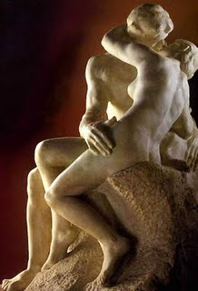
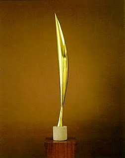
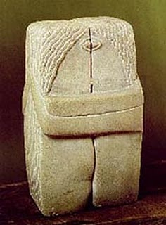

Öpücüğün Formu
Rodin’in meshur “The Kiss” heykelini bilmeyen sevmeyen yoktur her halde. Ne zaman baksam adam allahin tasina nasil bu kadar elektrik yuklemis diye sasarim. Erkegin elinin konumu, kolayici, sahiplenici pozisyonu, kadinin zerafetle hafif egilmesi, aralarindaki hassas, derin ama bir o kadar da elektrik yuklu temas, tas olum bu tas ne yapiyosun Rodin. Bu opusme temasini Rodin’den baska isleyenler de oldu tabi, ben asil bu yazida daha az unlu olan baska bir versiyona bakmak istiyorum,Constantin Brancusi’nin The Kiss adli heykeline. Ama Heykele gelmeden once Brancusi’den biraz bahsetmek lazim.
Constantin Brancusi 1876 – 1957 yillari arasinda yasamis Romanyali bir heykeltras, zanaatkar formunda bir sanat adami. Yasaminin buyuk cogunlugunu atolyesinde ya heykel yaparak ya da yaptigi heykellerin kopyalarini yaparak gecirmis. Rodin gibi bir dolu asistan ile calismaz, elinde zimparasiyla gunlerce bir heykeldeki ufak bir noktaya kavis vermeye calisir. Sade bir kesis hayati surdu yasami boyunca, evinde sadece bir iki esyasi vardi, koylu gibi basit giyinirdi. Genellikle yalniz takilirdi ama donemin entellerinden ve sanatcilarindan Ezra Pound, Picasso, Duchamp, Appollinaire, Emil Cioran gibi bir suru de arkadasi vardi. Hayatinda da heykellerinde ki gibi gecici olanin degil esas olanin pesindeydi.
Brancusi’nin heykellerini anlamak zordur, ama tam olarak ne oldugunu anlayamasiniz bile, size garip bir bicimde derinlerden bir yerden hep tanidik gelir figurleri. Heykellerinde seylerin ozunu, formunu, ideasini arar hep, bu baglamda Plato’dan derinden etkilenmistir. Atina’nin basina bela olan soruyu, hayatin da en temel sorularindan birini hatirlayalim: Degisen seylerin, degismeyen sabit kalan bir yani var midir? Misal ben alenen gun ve gun habire degisiyorum, ama butun bu degisimlere ragmen beni ben yapan bir seyler var mi? Yoksa boyle bir sey zictik, ben diye bir sey yok. Varsa, nedir o ve nasil oluyor da bu gorunurdeki degisimlerden etkilenmiyor? Benlik karmasik konu, daha somut bir seye bakalim Atinalilarin yaptigi gibi, dunyada zibilyon cesit kus var misal, hepsi bir birinden farkli, butun bu kuslari kus yapan bir ortak payda var mi? Biz bu kadar alanen bir birinden farkli kusun hepsine neye gore kime gore kus diyoruz. Ya da agac, ya da araba, ya da akliniza gelen her hangi bir nesneyi alin. Kolay gibi gorunuyor ama uzerine dusundukce derinlesen bir soru. Sokrat’in cevabi malum, biz kus mus diye konusuyoruz ama kusun ne oldugu hakkinda bi mok bilmiyoruz, tanimla desem iki dakkada acmazlara dusersin kendi tanimlarinda, onu birak, biz bi mok bilmedigimizi bile bilmiyoruz.
Lakin Plato bir seyler bildigini idda eder, Atina’lilari boyle karamsar bir cevapla yalniz birakamaz. Plato’nun cevabi da malum, butun kuslari kus yapan sey kusun formu, ideasi. Bizim dunyamizin disinda bir de platonik formlar dunyasi var. Dunyadaki nesneler bu formlarin idealarin mukemmel olmayan kopyalari, hepsi bu forma bir derece benziyor, ama hic biri form idea degil. Simdi bu noktada bir de dogu felsefesi parantezi acmak lazim. Buda da ayni acmazla karsilasip, Plato’nun tam zitti olan cevabi verdi:
–Buda abi sen bilirsin, surekli degisim halinde olan bu kadar degisik kusu kus yapan bir sey var midir?
-Yoktur guzelim.
-Hobala. Eee, peki boyle degismeyen bir sey yoksa kuslara ne oluyor?
-Kasik yok.
-Ne kasigi Buda abi, kus diyom kus?
-Tamam iste, asil kus dedigin sey yok diyorum be gulum, o zihninin yarattigi bir iluzyon.
-!?!?
Buda tabi ekmek attiginiz martilar yok demiyor, senin kafanda yarattigin marti kategorisi yok diyor. Ya da kus, agac, araba vs. kategorileri. Dunyayi kategorilere bolup sonra bu kategorilerin gercekten varolduguna inanmak beyninin yarattigi iluzyon. Bu Afrika kitasini cetvelle ulkelere ayirip sonra da bu sinirlarin gercekten varolduguna inanmaya benzer, somutta bir seyler var tabi orda, ama oyle Kongo’yu Kongo yapan cok ozel bir sey yok. Yarin obur gun baska biri baska sekilde cizip, adina Zongo da diyebilir. Dogu felsefi ile bati felsefesi iste boylece bir birinden cok zit noktalara gidiyor Plato’dan sonra, biri formlarin, idealarin, ozlerin tozlerin, kavramlarin varligina inanirken, digeri yalan bunlar, hicbir sey kalici degil diyor hem de hicbir sey. Taa ki Immanuel Kant‘a kadar bati felsefesi bu yanilsama ile yasiyor.
Neyse, biz Brancusi’ye ve onun Plato’nun idealari pesindeki arayislarina donelim. Brancusi de butun kuslari kus yapan sey nedir sorusuyla yola cikip, kus formunun gerek yeter elemanlarini bulmaya calisir. Her hangi bir kusun bu forma sahip olmayacagi asikar, o yuzden heykel herhangi bir kusa benzemeyez. Brancusi’nin soyutlamaya gitmesi bu nokta kacinilmazdir. Tek tek somut kuslara ait ozellikleri zimparalamaya baslar, kanatlar, gagalar, gozler, ayaklar vs. teker teker zimparalanir. Lakin bir noktada da durmasi lazim, figurde hala kusa ait bir seyler kalmasi lazim. Brancusi’nin durdugu nokta yanda, bilmiyorum acaba bu kusun formu demeseydim anlayabilir miydiniz. Lakin bana harbiden kusu cagristiran bir seyler var gibi geliyor bu figurde, ne oldugunu cikaramasam da.
Gelelim asil Brancusi’nin Rodin’nin ayni adli muhtesem eserinden esinlenerek yaptigi “The Kiss” heykeline. Rodin’in heykelini gormus bir bunye, Brancusi’nin eserini gordugunde haliyle biraz afallar. Romantizm, erotizm, estetizm, sublime duygular gitmistir. Kadin bedeninin feminenligi veya erkek bedenin maskulenligi de kalmamistir. Anin bir kirilganligi veya elektirigi de yoktur, her sey oldukca rigiddir. Kose hatlari yuvarlatilmis dikdortgen prizma formunda birlesmis iki insanimsi sey vardir bu heykelde. kollari bir birlerine dolanmis ve birlesik, vucudlari bir cizgi ayirmakta. Gozcukler simetrik, saclar oldukca benzer, dudakciklar kenetlenmis, kollardan birinin altindaki hafif bir tumsek kadini erkekten ayirmakta.
Lakin Brancusi’nin platonist kokleri biraz eselendiginde heykel anlam kazanmaya baslar. Daha once bahsetmistim, Plato’nun Symposium adli eserinde Atina’nin ileri gelenlerinden bir grup erkan kafa cekmekde ve ask uzerine konusmalar yapmaktadir. Kimler yoktur ki bu erkanda: phaedrus, pausanias, eryximachus, aristophanes, agathon, socrates, alcibiades. Yapilan konusmalardan en ilginc olanlarindan biri Aristophanes’in askin tarihini anlattigi konusmadir.
Insanlar eskiden dort kollu, dort bacakli, hermafrodit ve cok guclu yaratiklarmis. Kendi kendine yetebildikleri ve cok guclu olduklari icin her turlu taskinligi yapar, tanrilari onurlandirmayi ihmal ederlermis. Bir gun tanrilar buna cok sinirlenmis ve insanlari ortadan ikiye bolmus: bir taraf erkek, bir taraf kadin olmus. Ikiye bolunen parcalar birbirlerine sarilip kalmasinlar mi. Parcalarda hic tik yok, oyle birbirlerine sarilmis vaziyette aman birbirimizi kaybetmeyelim tadinda melun melun duruyorlar. Tanrilar bakmis bu is boyle olmayacak, bunlari dunyanin farkli yerlerine dagitmislar ki biraz aksiyon olsun, millet aranip dursun. Iste o gun bugundur yarim olan parcalar, tamamlanmak icin diger yarilarini ariyormus. diger yarini bulup bir butune ulasmaya da ask deniyormus.
Brancusi’nin heykeli de iste bu tamamlanmislik durumunu anlatiyor, birer yarimin birlesip bir butun olmasini. Bir butune ulasildiginda diger butun ayirt edici ogeler siliniyor ve yarimlardan olusan ama yarimlarin toplamindan baska bir sey olan bir form doguyor. Bunun uzerine biraz da Brancusi’nin soyutlama yoluyla bir seyin formuna, ozune ulasma cabasini ekledigimizde iste bu opucugun ve askin formu olan heykeli elde ediyoruz. Kadina ve erkege ait tum gerekli detaylarin askin butunluk potasinda eridigi, hic bir kadin ve erkege benzemeyen, hic birimizin aski veya opucugu olmayan, ama hepimizin asklarindan ve opucuklerinden de bir seyler barindiran bir heykel. Ne demisler, daha az daha fazladir.
NazIm
Bunlar da ilgini çekebilir:


Yorumlar
3 Yorum to “Öpücüğün Formu”Trackbacks
Check out what others are saying...-
[…] geçen sene 19. yy felsefe tarihi sınavı hasebiyle schelling isimli alman filozofun düşüncelerini anlamaya çalışırken “sanatın bilgi sağlamasının imkanı” gibi bir başlık girdi hayatıma. upuzun konuşmak gerek. tabi ki başka zaman. ne okudum, ne anladımsa artık, aniden prensese mektuplar’da zamanında okuduğum bir yazıyı hatırladım. hemen yeniden açıp okudum yazıyı ve bir hocam ve bir arkadaşıma mail gönderdim ve bendeki çağrışımları, kafamda patlayan havai fişekleri kısaca anlattım. okumak isteyenleri için yazının linki burada. […]


{kind=link}
{kind=link}
{kind=link}
Heykel sanki daha çok ‘kendisi’ için bir anlam ifade ediyor; bize anlatmak zorunda olduğu bir durum yok. Kendi içinde bütünleşmişler. Ama Rodin’in heykeline baktığımızda, orada bizim için bulunduğunu anlıyoruz. Bize, aşkı anlatması için. Diğer heykel ise zaten orada.
Rodin’in müzesini ziyaret edip büyülenmiştim ama Brancusi’yi tümden unutmuşum.. Hem de müzesi merkezde Pompediu’nın yakınındayken.. İkisini bu kadar farklı yaklaşım ve tarzlarıyla karşılaştırmak belki ama seçmek/taraf olmak zor.. Heykellerden yansıyan yaratıcılık hayranlık uyandırıyor.. Olağanüstü..
Kuş heykelini sanat tarihi derslerinde görüp farketmediysem bile artık çivi gibi beynime çakıldı.. Altında yatan düşünüşü de anlattığınız bu yazı için çok teşekkürler.. Dilerim bir gün küçük de olsa bir kopyasını yanımda/masamda/odamda bulundurma lüksüm olur..